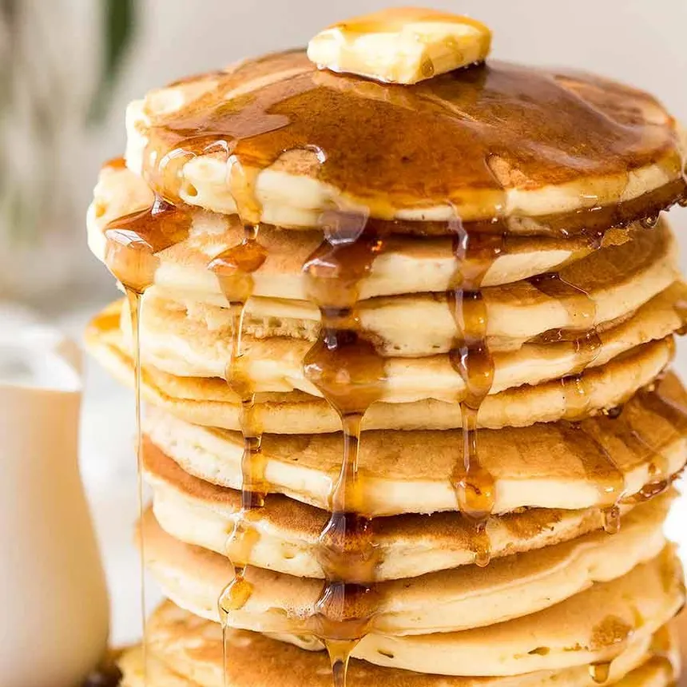

hot Pancakes
Ingredients:
- 1 ½ cups all-purpose flour
- 3 ½ teaspoons baking powder
- 1 teaspoon salt
- 1 tablespoon white sugar
- 1 ¼ cups milk
- 1 egg
- 3 tablespoons melted butter
Instructions:
- In a large bowl, whisk together the flour, baking powder, salt, and sugar.
- Make a well in the center and pour in the milk, egg, and melted butter; mix until smooth.
- Heat a lightly oiled griddle or frying pan over medium-high heat.
- Pour or scoop the batter onto the hot griddle, using approximately ¼ cup for each pancake.
- Cook for 3-5 minutes per side, or until golden brown and cooked through.
- Serve hot with your favorite toppings (e.g., syrup, fruit).